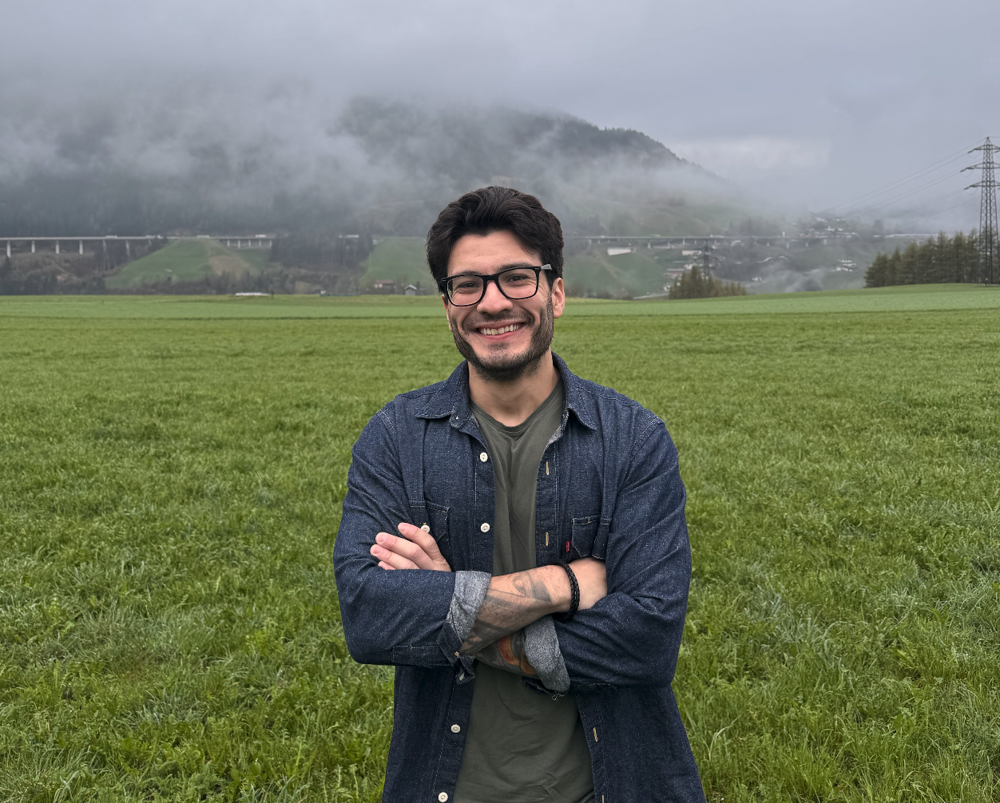

Reporter at BBC World Service (BBC News Brasil), based in London.
Research-assistant at the University of Cambridge (POLIS).
Founder of Datafixers.org.

September 2024 – Present NOW
BBC World Service (BBC News Brasil) | Reporter
Based in London, UK. Data journalism, investigations, breaking news. Selected among 500+ candidates.
August 2022 – Present NOW
Founder | Datafixers.org
I created this data-driven journalism project to help other journalists and researchers find stories in public records. Awarded a US$ 100,000 grant from the Brown Institute for Media innovation and as the best data project in Brazil in 2023 by Open Knowledge Foundation (Brazil chapter). Published investigative projects with the ICIJ, OCCRP, BBC and supported The Washington Post (including a Pulitzer finalist) and Al Jazeera.
January 2019 – March 2024
Brazilian Association of Investigative Journalism (Abraji) | Director for FOIA projects | Advisory board
One of the most relevant journalistic organizations in Latin America, similar to the IRE in the US. I am responsible for national surveys, workshops and projects related to Access to Information Law (Brazil's FOIA or Freedom of Information Act). Awarded a scholarship at the University of Oxford due to one of those projects.
January 2019 – July 2023
Fiquem Sabendo | Cofounder, content director
I founded a public records non-profit organization in partnership with three other professionals. I coordinated their journalism projects, including a 1-year project about presidential corporate card expenses that led to investigations against former and current Brazilian presidents and was mentioned in more than 1,000 stories.
December 2020 – August 2021
Organized Crime and Corruption Reporting Project | Brazilian correspondent | São Paulo
Responsible for long-term investigations in English and Portuguese on cross-border crime and corruption related to Brazil figures and developing partnerships with international and local media. Shortlisted in Sigma Awards for a project.
Others (2012 – 2018)
Various roles
Investigative producer/data journalist at CNN Brasil (Jan–Dec 2020); TV news producer and data journalist at TV Globo São Paulo (Jan 2019 – Dec 2019); public policy reporter at O Estado de São Paulo newspaper (2013–2018). Awarded more than ten times for stories published in these roles.
July 2024 – Present NOW
Research-assistant | University of Cambridge (POLIS)
Desk-based research and data analysis for the Prison Consensus Project. Part time/remote job.
July 2022 – September 2023
Professor (part-time) | Insper
I taught in a master's program about public records and spreadsheets in a 3-month class.
January 2017 – Present NOW
FOIA Trainer | Folha, Estadão, Correio Braziliense trainee programs and by demand
I teach about public records and the freedom of information act (FOIA).
2021 – 2022
Columbia University (full scholarship)
Master of Science in Data Journalism (New York/USA).
2019 – 2021
FGV-EAESP (full scholarship)
Master of Science in Public Administration (São Paulo/BR).
2015 – 2016
Fespsp
Political science (specialization / lato sensu).
2009 – 2012
Universidade de Sorocaba
BA in Journalism (Sorocaba/BR).
2023 / 2024
Earth Journalism Network (Internews)
Awarded three fellowships/reporting grants (Biodiversity Media Initiative 2022/2023, Conservation iOmbus 2024, and Media Grant to Strengthen Media Coverage of Environmental Crimes in the Amazon, 2024).
2023 / 2024
National Endowment for Democracy (NED)
5-months, Reagan-Fascell program. Developed publications about how to use data in journalism stories and a chatbot.
2021
University of Oxford, RISJ
6-months, Trust in News program. Developed a course for 300+ journalists about public records.
2018
International Center for Journalists
Emerging Media Program, 45 days, co-founded the non-profit Fiquem Sabendo.